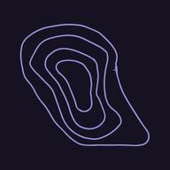

BMI is a rough screening measure for adults 18 and over. It doesn’t account for muscle, body shape or age, so treat it as a guide, not a diagnosis. A doctor can give a proper assessment. Asian cutoffs (23 and 25) are used in some Asian guidelines.
Week starts on